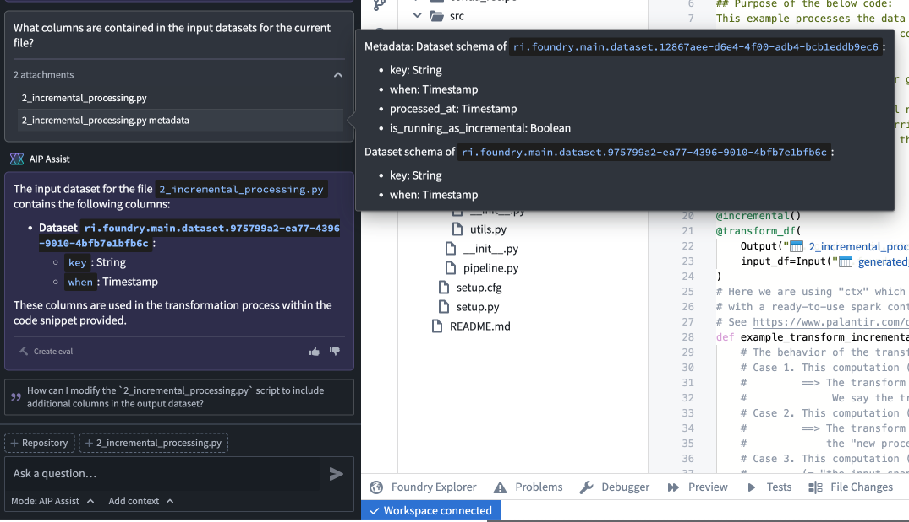
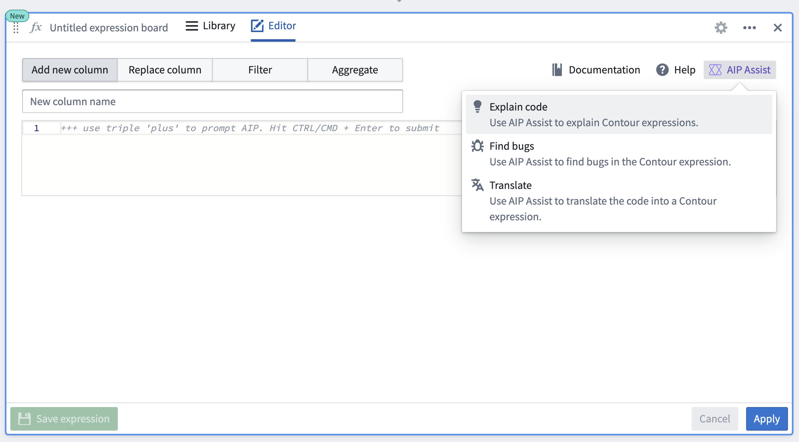
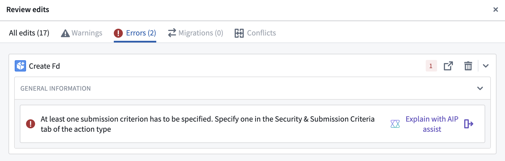

AIP Assist offers various integration points with other applications on the Palantir platform, and we are continuously evaluating them to improve and expand AIP Assistâs footprint. These integrations streamline common workflows and reduce the frictional cost of getting help from AIP Assist. If you have any ideas for additional, high-value integrations,let us know by posting in the Get Involved â section of our Developer Community forum. AIP Assist application integrations are designed to be highly visible in-platform, but you can also consult the reference below to explore the available integrations.
When viewing a code file in Code Repositories, you will see the Ask AIP Assist helper, which provides a series of preconfigured, code-related actions that AIP Assist can take to aid development.
In Code Repositories, the AIP Assist sidebar displays configuration options that allow you to include attachments to provide AIP Assist with additional context. You can choose to include a number of different components, including the entire repository, one or multiple files, or a highlighted snippet of code.

With this functionality you can ask AIP Assist to:

AIP Assist will also have access to the metadata of referenced datasets and objects in attachments, enabling users to ask specific questions about Ontology objects and input or output datasets.

You can select Enable AIP Assist in Carbon workspaces to allow users to interact with AIP Assist chatbots (formerly AIP Assist agents) that are tailored to support specific user groups. This requires that dedicated AIP Assist chatbots be configured in AIP Chatbot Studio for users to interact with.
For more information refer to enabling AIP Assist in Carbon workspaces.
When using the expression board in Contour, you can ask AIP Assist to perform a few different actions related to authoring expressions, such as explaining code, finding bugs, and translating code into expressions.

The Workshop Button widget allows developers to add a Send to AIP Assist event that will open AIP Assist and ask it a preconfigured prompt that is either based on static text or a dynamic variable value.
This functionality is powerful when used in coordination with AIP Assist Agents that are trained on custom documentation about the Workshop application in which the Send to AIP Assist button widget is used. When configuring the Send to AIP Assist event in Workshop, it is possible to set the default AIP Assist Agent that will be used when responding to the configured prompt.
For more information refer to the Send to AIP Assist event documentation.
You can use the slate.askAIPAssist action to open AIP Assist, and specify an optional prompt string argument that will be sent to AIP Assist as the user's message. The prompt can be derived from the current user's application state to enable targeted questions to AIP Assist.
For more information refer to the Slate Ask AIP Assist documentation.
To facilitate in-platform support, AIP Assist has been incorporated into the issue filing flow in the Issues application. Users can select Open AIP Assist and get immediate help to consult AIP Assist before filing issues.

If you have already created an issue, you can use integrated AIP Assist tools to get immediate support. AIP Assist can either provide an answer to the issue based on issue information and user questions, or summarize a lengthy issue to optimize issue resolution.

AIP Assist has been integrated with Ontology Manager to aid in the resolution of errors during Ontology updates. When updating an Ontology, navigate to the Errors tab and select Explain with AIP Assist on an error to have AIP Assist provide suggested actions for error resolution and error explanations.
